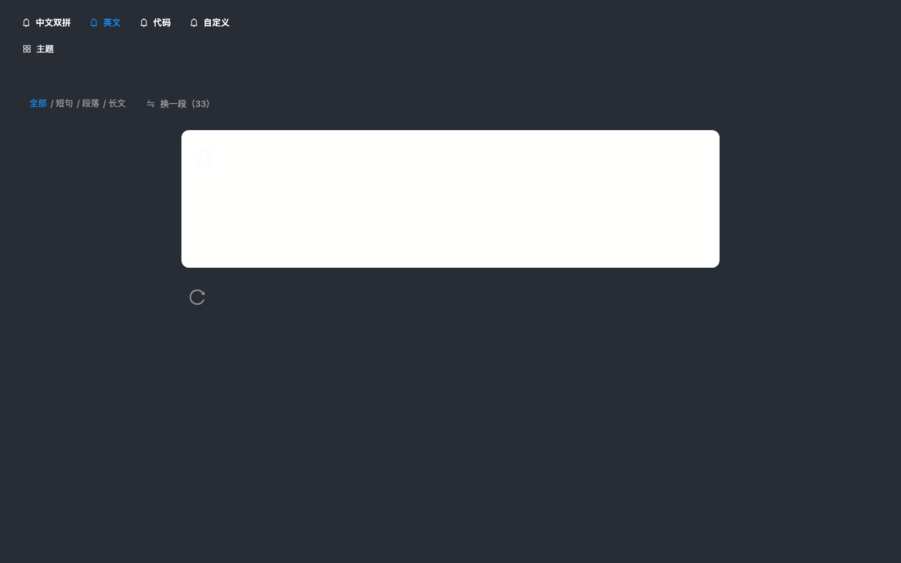
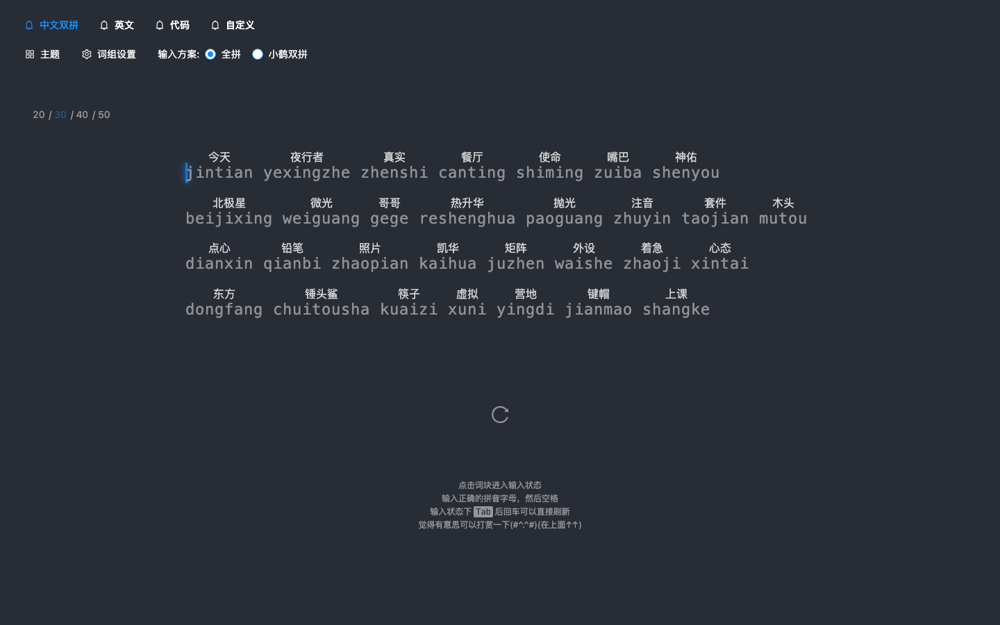
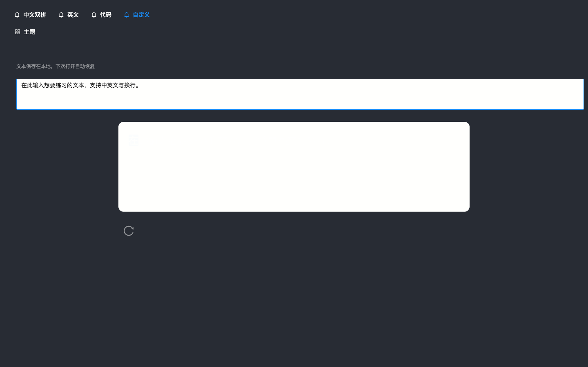
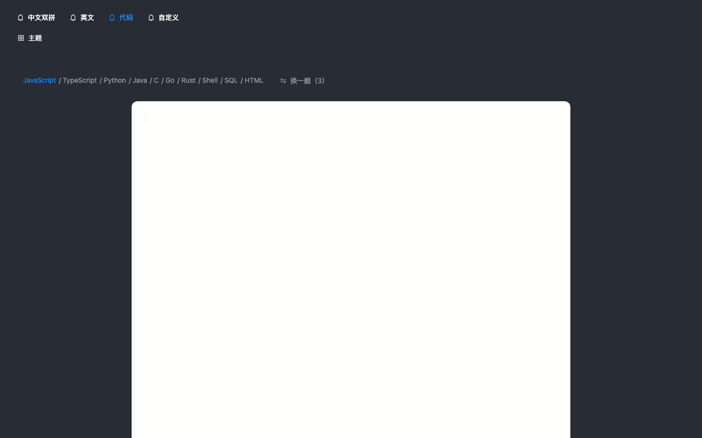
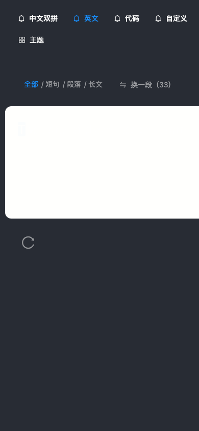

现状取证
以下截图来自本地 vite dev 真实渲染，1440×900，默认主题。

英文页：面板存在、文本已渲染，但 完全不可读。下方那个"转圈"其实是重开按钮 ReloadOutlined。

中文双拼页：唯一"正常"的页面——因为它没走统一的打字面板组件，而是自己画了一套。

自定义页：输入框是 白底黑框的原生 TextArea，与深色主题完全脱节；下方面板同样不可读。

代码页：面板高度被内容撑到 900px 以上，整屏只剩一片白。

390px 视口：模式导航被裁切（"自定义"只露一半），面板横向溢出，无法在手机上使用。
问题清单
按严重度排序。P0 影响可用性，必须立刻修；P1 决定"形象"，是本次升级的主体；P2 是打磨项。
打字面板白底白字，三个模式不可用
面板背景复用了 --home-window-bg-color（本意是首页那张浅色卡片），文字色却取 --head-text-color。深色主题下两者都是近白色，正文彻底消失。这是"语义变量被跨场景复用"造成的典型事故。
--home-window-bg-color 解耦，新增独立的 --typing-panel-bg；40 个主题各自只需补一行。移动端整体失效
词块容器写死 min-width: 920px，打字区用 <Col flex="900px"> 固定宽度，页面没有任何断点。手机打开即横向滚动，模式导航被裁切。
width:100%; max-width:900px，栅格去 Row/Col 化，加 768 / 480 两档断点；中文词块改 flex-wrap 自适应。没有品牌，只有"一个 antd 页面"
顶栏没有 logo、没有产品名，<title> 是 typing-cn，meta description 还重复写了两条。用户无法回答"这是谁做的、和别的打字网站有什么不同"。40 个主题是很好的资产，但没有一个统一的身份把它们串起来。
导航图标语义错误
「中文双拼 / 英文 / 代码 / 自定义」四个模式入口，统一用了 <BellOutlined /> 铃铛图标。铃铛代表通知，和打字模式毫无关系——这是复制模板时留下的占位符。四个入口权重完全相同，选中态只靠换色，扫视时找不到"我现在在哪"。
信息架构：全局设置与页面参数混在一行
第二行把「主题」「词组设置」（全局、低频）和「输入方案」「UI尺寸」（本页、高频）平铺在同一条线上，再靠 ROUTE_HEADER_CONFIG 按路由显隐。结果是：同一位置在不同页面出现不同东西，用户永远记不住哪里能改什么。
主操作长得像"加载中"
重开按钮是 90×90、纯图标、50% 不透明度，位置在面板正下方。圆形箭头 + 半透明，与 antd Spin 视觉同构，用户第一反应是"页面还没加载完"。它还是纯图标、无文字、无快捷键提示。
打字过程零反馈
WPM、准确率、用时只在打完那一刻出现（TypeResult 仅在 showResult 时渲染）。而打字练习的核心快感来自"实时看到自己在变快"。没有进度、没有实时速度、没有节奏感，练习就变成了盲打。
版式没有统一轴线
中文页是 900px 左对齐的词块网格，英文页是 860px 居中的段落，筛选行却固定左内边距 30px。三种对齐方式共存，页面左右边缘参差，视觉上"散"。
English.less:7 · TypingArea.less:66,91 · Monkey.less:55关键色对比度在及格线边缘
实测：主色 #1890ff 在 #282c34 上 4.31:1（12–14px 小字不达 AA 4.5）；错误红 #ff0000 3.50:1；主色按钮上的白字 3.24:1。README 里写"全部通过 WCAG 检查"，实际这几个值没过。
#2AA79B（深底 5.4:1）；错误色改 #E0553F 并配 14% 底色；按钮文字改用深色底。中文词块的节奏不稳
每个词上方是 14px 拼音、下方是 22px 汉字，词块四周 margin:7px，拼音默认 inherit 色再压 60% 不透明。行与行的纵向间距被词块高度决定，扫读时视线要反复上下跳。
padding 控制，行高统一 1.9。主题选择器是 40 个色块
40 个纯色矩形平铺，只显示主题名，没有预览、没有明暗分组、没有搜索。用户选主题本质是"想看看效果"，这里只能盲选。
Header.tsx:260-279 · Header.less:75-89缺空态与首次引导
进页面就是一块空面板，没有任何"点击开始"的提示。中文页有 4 行 12px 灰字说明（对比度虽够但字号偏小），英文/代码页则完全没有。
Monkey.tsx tip-linekbd 提示：「点击面板开始 · Tab 重新开始 · Esc 换一段」。视觉方向
升级不是换配色，而是给这个产品一个"只属于它"的形状。方向来自产品本身：小鹤双拼 = 两键一字，键盘 = 唯一的核心道具。
「鹤」承接小鹤双拼的血脉——轻盈、精准、一笔到位；「键」说明它是工具，不是游戏。标志是一枚键帽，帽顶一道折线：两键相交，成一字。
标志在 16px 下仍可辨识：外轮廓是键帽，内部折线是唯一细节，不做渐变与描边堆叠。
鹤青 只给"已完成/正确"，辅助色只给"当前/待输入"。颜色不再是装饰，而是进度本身。色彩系统
鹤青在墨底上 5.4:1、在纸底上 4.6:1，正文与按钮都过 AA；朱砂专用于错误，不参与品牌。深/浅两套主题共用同一组语义名，只换值。
字体与节奏
Type Scale
Font Stack
PingFang SC / Noto Sans SC英文正文
Inter → 系统无衬线回退代码与拼音
JetBrains Mono → SF Mono数字一律
tabular-nums，WPM 跳动时不抖位
改版原型（可直接打字）
下面是按上述方向重做的界面，不是效果图——点击面板即可开始输入，切换模式、切换明暗都可用。请对比上一节的截图。
同一段文本再练一次，通常能快 10%。
今天 夜行者 真实 餐厅 使命 嘴巴 神佑 北极星 微光 哥哥 热升华 抛光 注音 套件 木头
手机端不是"把桌面缩小"，而是重排信息优先级：
① 模式切换压成四等分标签，横向不溢出；
② 统计条上移到面板之前，打字时不用移动视线；
③ 面板边距从 38px 收到 16px，正文 14px / 行距 2.05，单手可达；
④ 重开按钮文字化，放在拇指区。
断点：1024 / 768 / 480，面板宽度始终 100%，永不出现横向滚动。
组件级改造清单
按现有文件结构给出落点，不推翻技术栈（React 17 + antd 4 + Less），只换表皮与结构。
| 文件 | 现状 | 改法 |
|---|---|---|
| themes/*.css | 打字面板复用首页卡片色，导致白底白字 | 新增 --typing-panel-bg / --typing-panel-border / --typing-dim-color 三个语义变量；面板不再引用 --home-window-* |
| Header.tsx | 两行文字链接 + 铃铛图标 + 混排的设置项 | 重写为三段式：品牌 / 分段控件 / 图标按钮组；ROUTE_HEADER_CONFIG 显隐逻辑移入设置面板 |
| TypingArea.tsx | 只有面板 + 隐藏输入框；Row/Col 固定 900px | 加统计条插槽、进度线、空态提示；容器改 max-width 自适应；补 aria-live 播报 |
| ReloadBtn.tsx | 90×90 纯图标，视觉同构于 Spin | 改为 type="text" 带文字按钮，14px 图标；保留 Tab 快捷键 |
| TypeResult.tsx | 三列大数字，无对比基准 | 加"本次 vs 上次"增量、成绩等级条；数字用 tabular-nums |
| Monkey.less | min-width 920px，词块 margin 定位 | 去掉 min-width，改 padding + 统一行高 1.9；拼音独立语义色 12px |
| 主题弹窗 | 40 个纯色块，无预览 | 两列卡片 + 三色条预览；按 深色/浅色 分组，顶部加搜索 |
| index.html | title typing-cn，description 重复 | 改为「鹤键 CraneType · 中文双拼打字练习」，补 og: 系列与 theme-color |
实施路线
先止血，再换脸，最后打磨。每阶段结束都可独立上线。
止血
- 面板 token 解耦，修白底白字
- 重开按钮加文字
- 去掉铃铛图标
- 修 meta / title
换脸
- 品牌标志 + 顶栏重构
- 打字面板重做（层级 / 进度 / 统计条）
- 统一容器与栅格
- 响应式三档断点
打磨
- 主题选择器重做
- 成绩对比与历史曲线
- 空态 / 首次引导
- 键盘可达性与 aria 补全
验收标准
升级是否完成，用这 10 条判断，而不是"看起来好看了"。